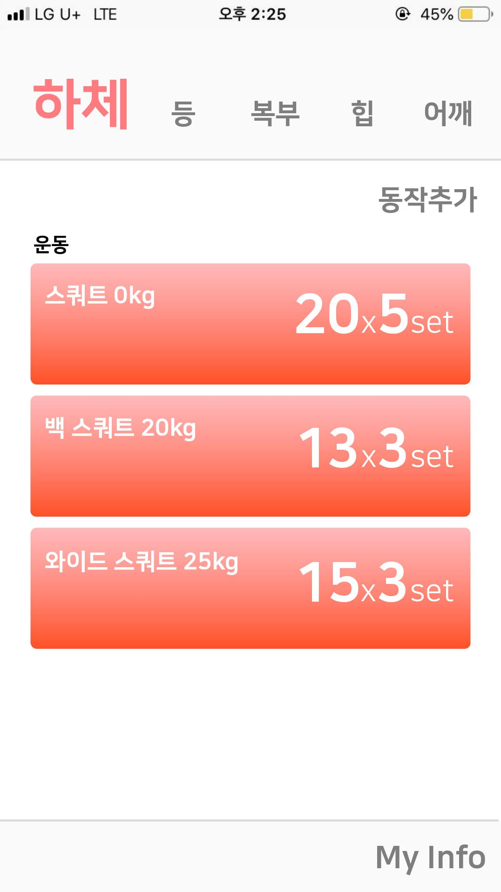
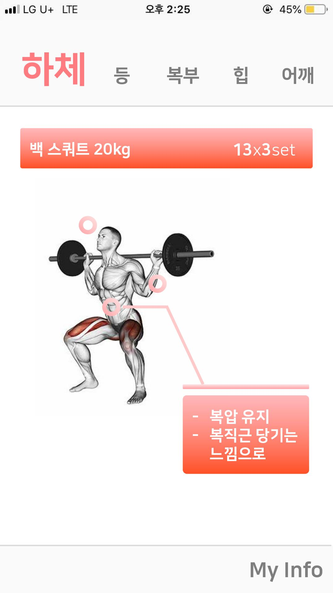

자기소개
IT 서비스 소개
Contacts
웨이트 루틴 기록 어플리케이션
을 만들고 싶어요
"운동 동작을 기록해둘 수 있다면 더욱 편리하지 않을까?"


부위별로 운동 루틴을 기록할 수 있습니다.
어플리케이션 데이터베이스에는 운동 동작이 gif 형태로 저장되어 있습니다.
이용자는 특정 운동 동작을 선택하여 자신의 루틴을 기록할 수 있습니다.
운동 동작, 횟수, 중량은 물론 동작 수행 시 주의할 점을 부위별로 기록할 수 있습니다.